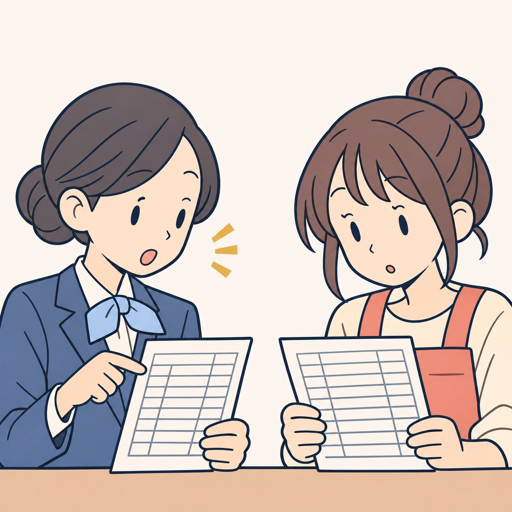

銀行勘定調整表｜未渡小切手・未記帳・誤記の修正を自作例で確認
銀行勘定調整表は、会社の預金帳簿残高と銀行の残高の差を、未処理・時間差・誤記等に分けて説明する表です。残高を合わせる計算と、会社が行う修正仕訳は別に確認します。両側の金額が一致しただけで、すべての分類や仕訳が正しいとは限りません。
2027年度の確定区分表でも、銀行勘定調整表は2級の範囲に残っています。一方、紙の手形・小切手をめぐる改定があるため、以下の小切手の例は2026年度向けの学習例として区別します。2027年度以降の学習では、その年度の公式案内・問題と教材を照合してください。例題は編集部の架空例です。
「どちらの記録を直すか」と「会社の仕訳」を分ける
場面で見る：二つの記録の、どこが違う？

- 同じ預金口座・同じ日付で比べる：銀行の残高と会社の当座預金残高を、別の口座や別の日の数字と混ぜずに並べます。
- 差の原因を一件ずつ確認する：会社が未記帳・誤記なら会社側を訂正。会社で正しく記帳済みの時間差なら、会社で二重に仕訳しません。
- 調整表と会社の仕訳を分ける：銀行側の調整は、比較できる残高を表の上で求めるものです。会社が銀行の実際の帳簿を書き換える操作ではありません。
下の例題3の調整後残高500,000円へ進み、会社で記帳する手数料などと、銀行側だけで調整する時間差を区別してください。未渡小切手は例題1のように、支払相手と元の取引も確かめます。
差の原因を銀行・会社の「責任」と決めつけず、何がどちらに記録済みかを読みます。銀行側の実際の記録を、学習用の調整表を書くだけで変更するわけではありません。以下は両者区分調整法で調整後残高を合わせる場合の基本例です。
| 本例の差の原因 | 調整表での扱い | 会社の修正仕訳 |
|---|---|---|
| 未取付小切手：会社は支払を記帳し相手へ交付済み、銀行は未引落 | 銀行側から減算 | この時間差だけなら不要 |
| 時間外預入：会社記帳済み、銀行未反映 | 銀行側へ加算 | この時間差だけなら不要 |
| 未渡小切手：支払記帳したが、まだ相手へ未交付 | 会社側へ加算 | 当座預金を戻し、未払いの債務を確認 |
| 銀行手数料の会社未記帳 | 会社側から減算 | 支払手数料／当座預金 |
| 銀行入金の会社未記帳 | 会社側へ加算 | 入金の原因に合う相手科目を確認 |
| 会社の金額誤記 | 正しい金額との差を会社側へ加減 | すでに記帳した額との差額を訂正 |
表の仕訳不要は、会社が正しく記帳済みという条件つきです。ほかに会社の誤記がある場合まで不要とするものではありません。また、差の原因が必ず4種類だけという説明も改めました。
未渡小切手は、取得取引そのものの取消しではない
金融庁の財務諸表等規則ガイドライン15−1は、未渡小切手を預金として処理するとしています。支払記帳した当座預金を戻す一方、商品や備品をすでに受け取っているなら、その取得自体は残ります。「小切手を渡していないから取引全体が未成立」「必ず元の仕訳を丸ごと逆にする」という説明を訂正しました。
例題1：買掛金支払用の未渡小切手
商品の掛仕入れは完了しています。買掛金40,000円を支払う小切手を作り、借方 買掛金40,000／貸方 当座預金40,000と記帳しましたが、小切手は社内に残っています。修正仕訳は？
解答・考え方を見る
借方 当座預金40,000／貸方 買掛金40,000。まだ減らしてはいけない預金を戻し、未払いの買掛金を復活させます。この条件では支払の仕訳を逆にします。商品の取得を取り消す仕訳は行いません。
例題2：備品を受け取った日に支払記帳していたら？
備品40,000円は受け取り済みで、借方 備品40,000／貸方 当座預金40,000と記帳。しかし、その小切手は未渡です。備品を減らす逆仕訳でよいですか。
解答・考え方を見る
備品は減らしません。借方 当座預金40,000／貸方 未払金40,000です。受取済みの備品40,000円と、まだ払っていない代金40,000円を残します。
元の仕訳を単純に反対にして貸方を備品とすると、実在する取得済みの備品まで消してしまいます。貸方の相手科目は元の取引と記帳内容で判断してください。
自作例：既存の500,000円の調整を検算する
銀行残高540,000円、会社帳簿470,000円。未取付小切手60,000円、時間外預入20,000円、買掛金支払用の未渡小切手40,000円、銀行引落済みの手数料未記帳10,000円とします。他の差や誤記はありません。
| 項目（円） | 銀行側の計算 | 会社側の計算 |
|---|---|---|
| 調整前 | 540,000 | 470,000 |
| 未取付小切手 | −60,000 | 調整なし |
| 時間外預入 | ＋20,000 | 調整なし |
| 未渡小切手 | 調整なし | ＋40,000 |
| 手数料未記帳 | 調整なし | −10,000 |
| 調整後 | 500,000 | 500,000 |
例題3：会社で記帳する2本を選ぶ
上の表について、会社の修正仕訳を示してください。銀行側の時間差の2項目も仕訳しますか。
解答・考え方を見る
①借方 当座預金40,000／貸方 買掛金40,000。②借方 支払手数料10,000／貸方 当座預金10,000。
本例で会社の帳簿が正しい未取付・時間外預入には、追加の会社仕訳はしません。会社帳簿は470,000＋40,000−10,000＝500,000円、銀行側は540,000−60,000＋20,000＝500,000円で一致します。

記帳漏れと、すでに記帳した金額の誤りを分ける
例題4：手数料を9,500円と誤記した場合
実際の銀行手数料は5,900円ですが、会社は借方 支払手数料9,500／貸方 当座預金9,500と記帳済みでした。この差だけを直す仕訳は？
解答・考え方を見る
会社は費用を3,600円多く、預金を3,600円少なく記帳しています。借方 当座預金3,600／貸方 支払手数料3,600です。
未記帳としてさらに5,900円の手数料を費用にすると二重計上になります。差の原因を読み、誤記額と正しい額の差だけを直します。
6月末の残高がどちらも104,000円。照合を終えてよい？
架空の会社の経理を引き継ぎました。6月29日の締めには、会社と銀行の同じ当座預金口座が120,000円で一致し、未解決の項目もありません。下の2枚がその後の全記録です。手数料はありません。
6月30日の帳簿を締めるには、会社でどの仕訳が必要でしょうか。同じ取引に印を付け、会社と銀行の両側から6月末の調整後残高を計算してください。ハル商店には売掛金8,000円があり、請求番号はR47です。
| 日付 番号 | 会社の摘要 | 入出金 |
|---|---|---|
| 6/30 P21 | 仕入先への振込 | 出金 24,000円 |
| 6/30 M18 | 当社の手元現金を営業終了後に夜間金庫へ預入 | 入金 8,000円 |
6月30日の会社帳簿残高 104,000円
| 日付 番号 | 銀行の摘要 | 入出金 |
|---|---|---|
| 6/30 P21 | 仕入先への振込 | 出金 24,000円 |
| 6/30 R47 | ハル商店から振込（請求R47の支払い） | 入金 8,000円 |
6月30日の銀行残高 104,000円
締め後の照合用明細 7月1日、M18「夜間金庫」入金8,000円。翌営業日の記録なので、6月30日の銀行残高には含まれていません。
ヒント 金額を隠して照合する
会社の2行を、日付・番号とお金の出どころで銀行の明細に対応させます。6月中に見つかった番号と、7月になって見つかった番号を書き分けてみましょう。
照合結果・会社の仕訳・6月末残高を確かめる
P21は双方にある同じ支払いです。会社のM18は自社の現金、銀行のR47は得意先からの振込。同じ8,000円でも別の入金です。M18に対応する銀行の記録は7月1日にあります。
会社が6月に追加するのはR47の1本です。 借方 当座預金8,000円 ／ 貸方 売掛金8,000円。これでハル商店への売掛金が消えます。M18は会社がすでに記帳しているため、もう一度預入の仕訳をする必要はありません。
- 会社側 帳簿104,000円 ＋ R47の未記帳入金8,000円 ＝ 112,000円。
- 銀行側 6月末明細104,000円 ＋ M18の時間外預入8,000円 ＝ 112,000円。こちらは調整表上の計算です。
一致した後にも確認する3項目
- 各差を会社・銀行のどちらの計算へ反映したか、重複や漏れはないか。
- 会社の修正仕訳が、元の記帳と実際に残る債権・債務・資産に合うか。
- 一致させるためだけの根拠のない金額を足していないか。
過去の出題頻度や「最多失点」といった裏付けのない順位づけは削除しました。この確認手順は編集部の学習案であり、実際の銀行記録の訂正や、すべての預金実務の例外を網羅するものではありません。
確認した一次資料
既存本文の主要記述照合：2026年11月2日。追加した場面と説明は2026年11月15日に一次資料と再照合しました。6月末の明細を照合する演習は2026年11月19日に出題区分・使用科目と夜間金庫の資料を確認しました。公式の基準・制度と、編集部の架空例・学習提案を分けています。
よくある質問
未渡小切手なら、商品の取得や備品の取得も取り消しますか？
受取済みの取得取引そのものは取り消しません。当座預金を戻し、まだ払っていない買掛金や未払金を確認します。元の仕訳を必ず丸ごと逆にする説明は訂正しました。
調整後残高が一致すれば、全部正しいといえますか？
一致は必要な検算ですが、分類や相手科目まで正しい保証にはなりません。各差の反映先、会社の修正仕訳と残る資産・債務、重複や漏れも確認します。
2027年度は銀行勘定調整表が範囲からなくなりますか？
公表済みの2027年度確定区分表でも2級に残っています。紙の手形・小切手をめぐる改定とは分け、本文の小切手例は2026年度向けとして扱っています。
次に確認する記事
使った条件と、次に確かめる論点を学習メモへ残せます。
Study Questで学習を記録する →